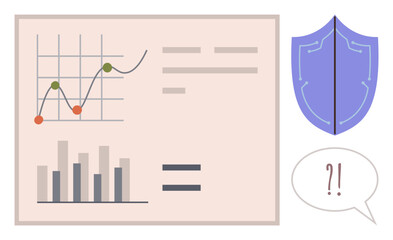

From audio to action — timestamp by timestamp.
A workflow built for supervisors: find the moment, understand the trigger, coach the behavior, measure the outcome.

How the system works
Step 1
Ingest calls with metadata that matters.
Agent, queue, disposition, duration, and outcome fields so trends align with your
operations.
Upload .wav / .mp3
Step 2
Transcribe and anchor every sentence to time.
So a supervisor can jump to “the moment” without listening to the full call.
Timestamped transcript
Step 3
Score sentiment and detect escalation triggers.
Tone shifts, silence gaps, repeated objections, and cancellation language are
flagged automatically.
Sentiment timeline
Step 4
Turn top behavior into coaching.
Coaching recommendations are tied to outcomes: CSAT lift, AHT control, and First
Call Resolution improvements.
Coaching queue
Insurance
Measure confusion signals and verify policy explanations with compliance
cues.
↑ 23% First Call Resolution
Telecom
Flag cancellation intent early and coach de-escalation phrasing that
protects CSAT.
↓ 17% Escalations
Banking
Surface risky phrases, verify authentication wording, and track resolution
confidence cues.
↑ 11% QA pass rate
Healthcare
Measure empathy and clarity in patient calls, especially around billing and
scheduling.
↑ 19% Patient satisfaction
FAQ
It prioritizes it. Instead of random sampling, reviewers jump to flagged
timestamps and verify outcomes fast.
We focus on volatility and timestamp triggers so supervisors can connect “what
happened” to escalations, AHT, and CSAT impact.
Yes. Calls can be tagged by queue, campaign, disposition, and agent team for
apples-to-apples coaching and reporting.